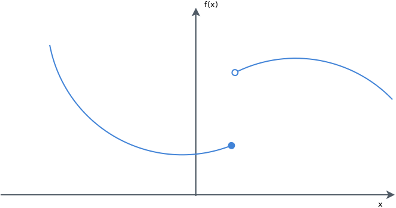

In this post, we are going to discuss a very powerful -mathematically as well as pragmatically- optimization framework; the First Order Primal Dual Convex Optimization Technique. This involves a few definitions that may not look friendly at first, but the framework is in fact relatively understandable. The framework has been -successfully- applied to image denoizing and image inpainting, and is really worthy of spending some time to comprehend it.
We will remind a couple of definitions that are useful in this framework, but you can find many more details, definitions, theorems and proofs in "Convex Analysis" by Hiriart-Urruty and Lemarchal, "Convex Optimization" by Boyd and Vandenberghe or "Optimization. Applications in image processing." by Nikolova (the latter two are available freely in pdf format).
We are going to consider here a general problem of the form: $$ \begin{align} & \underset{x}{\text{minimize}} & & \sum_{i \in \Omega} M_i(x_i) + R(Lx) \end{align} $$ with:
- \(M_i\) a lower semi continuous function
- \(R\) a lower semi continuous function
- \(L\) a continuous linear operator
Soooo.... Why is this useful, again?
Let's say you need to denoise an image for instance. In the Total Variation context, you can write image denoising as the following optimization problem: $$ \begin{align*} & \underset{x}{\text{minimize}} & & \left\| \nabla x\right\| + \frac{\lambda}{2} \left\| x -f \right\|^2 \end{align*} $$
The Total variation framework also allows for a nice formulation of the motion estimation problem .
It can also be used for inpainting:
Useful definitions
Let's first define a couple of concept that we will use afterwards. A function \(f\) on a normed real vector space \(V\) is proper if \(f: V \rightarrow ]-\infty , \infty] \) and if it is not identically equal to \(+\infty \).
A function \(f\) on a normed real vector space \(V\) is coercive if \(\lim_{\left\|u \right\| \rightarrow + \infty} f(u) = + \infty\).
Most of the functions we will consider here will be lower semi-continuous. This means that a function \(f\) on a real topological space \(\mathcal{X}\), \(f: V \rightarrow ]-\infty , \infty] \) is lower semi-continuous (l.s.c.) if \( \forall \lambda \in \mathbb{R}\), the set \( {u \in V: f(u) \leq \lambda}\) is closed in V.
This property is quite important, as we will see in the following theorem: Let \(U\) be non-empty and closed, and \( f : \mathbb{R}^n \rightarrow \mathbb{R}\) be l.s.c.and proper. If \(U\) is not bounded, we also suppose that f is coercive. Then: \(\exists \hat{u} \in U s.t. f(\hat{u}) = inf_{u \in U} f(u)\).
This is actually very important; it means that if \(f\) has all the aforementioned properties, it takes a minimum value on any set \(U\) non-empty and closed.
We will suppose here that you are familiar with the concept of convex functions and sets.
The Moreau Envelope
In our image denoising or inpainting context, the function to optimize may not be smooth, and this complicates the task of minimizing/optimizing the objective function. In order to alleviate this difficulty, a brilliant idea has been introduced in "Proximité et dualité dans un espace hilbertien" by Moreau. Given a proper lsc convex function \( F : \mathcal{X} \leftarrow \mathbb{R} \), the Moreau envelope constructs a smoothed version of function \(F\) where the degree of smoothing is controlled by a parameter \(\tau\). The Moreau envelope is defined as the unique solution of the optimization problem: $$ \begin{align} \mathcal{M}_{F, \tau} (\tilde{x}) = \min \limits_{x \in \mathcal{X}} F(x) + \frac{1}{2 \tau} \left\| x - \tilde{x} \right\|_2^2 \end{align} $$
We note that this problem is smooth and it admits a unique minimizer due to the added smoothing \(\mathcal{l}_2\) norm term.
This being said, just because a problem is strictly convex doesn't mean it is easy to solve. So basically, if \( F \) is hard to optimize, the Moreau envelope is likely difficult to compute. Nonetheless, there exist some functions whose Moreau envelope computation yields a closed form.
We can associate to this function the following operator: $$ \begin{align} prox_{F, \tau} (\tilde{x}) = \arg \min \limits_{x \in \mathcal{X}} F(x) + \frac{1}{2 \tau} \left\| x - \tilde{x} \right\|_2^2 \end{align} $$ that returns the unique minimizer of the Moreau envelope. This operator is called the proximal operator.
Not additive.
The Fenchel Transform
Another difficulty of this optimization problem is the coupling of variables \(x_i\) due to the linear operator \(L\) and the function \(R\). Combined to the eventual non smoothness of \(R\), this imposes to optimize all variables \(x_i\) jointly. One solution would be to smooth the objective function \(R\) to make corners disappear. However, this changes the objective function which might not be desirable. Using the Moreau envelope is unfortunately generally computationally very intensive because, as seen in Section 2.3.1, the proximal operator is not an additive function. The first order primal dual technique relies on the Fenchel transformation to decouple the variables. This transformation comes with the cost of adding new variables, named dual variables, to our current optimization problem. The Fenchel transform augments to a saddle point optimization problem, that is to say, a convex minimization problem for the primal and a concave maximization problem for the dual variables.
The Fenchel Transform, also called convex conjugate of a function \(R\) is defined as follows: $$ \begin{align} R^{*}(y) = \sup \limits_{x} \langle x, y \rangle - R(x) \end{align} $$ This transformation encodes the convex hull of the function \(R\) epigraph as a set of hyperplanes. It is worth noting that the Fenchel transform always yields a convex function.
Applying this transform twice to the function \(R\) yields the bi-convex conjugate \( R^{**} \): $$ \begin{align} R^{**}(y) = \sup \limits_{y} \langle x, y \rangle - R*(y) \end{align} $$ So if \(R\) is a convex function, \( R^{**} = R \) and we have: $$ \begin{align} R(x) = \sup \limits_{y} \langle x, y \rangle - R*(y) \end{align} $$ And this gives an efficient approach to decouple the variable \(x\) in our context!!
Primal Dual algorithm
So now let's see how to combine the last two ideas in our optimization problem. First, we introduce the Moreau envelope for the \( (M_i)_{i} \) : $$ \begin{align} \arg \inf \limits{x \in \mathcal{X}} \sum_{i} M_i (x_i) + \frac{1}{\tau} \left\| x_i - \tilde{x}_i \right\|^2_2 + R(Lx) \end{align} $$ Then we apply the Fenchel Transform to \(R\): $$ \begin{align} \arg \inf \limits{x \in \mathcal{X}} \sum_{i} M_i (x_i) + \frac{1}{2\tau} \left\| x_i - \tilde{x}_i \right\|^2_2 + \langle y , Lx \rangle - R^{*}(y) \end{align} $$ So now, all the \(x_i\) are decoupled. Their minimization is achieved by computing a proximal operator. But \(R^{*}\) is not assured to be smooth, so we are going to use the Moreau envelope again on \(R^{*}\): $$ \begin{align} \arg \inf \limits{x \in \mathcal{X}} \sum_{i} M_i (x_i) + \frac{1}{2\tau} \left\| x_i - \tilde{x}_i \right\|^2_2 + \langle y , Lx \rangle - R^{*}(y) - \frac{1}{2 \sigma} \left\| y - \tilde{y} \right\|^2_2 \end{align} $$ And now, we can transform this problem into an iterative one by doing: $$ \begin{align} \arg \inf \limits{x \in \mathcal{X}} \sum_{i} M_i (x_i^{(n)}) + \frac{1}{2\tau} \left\| x_i^{(n)} - x_i^{(n-1)} \right\|^2_2 + \langle y^{(n)} , Lx^{(n)} \rangle - R^{*}(y^{(n)}) - \frac{1}{2 \sigma} \left\| y^{(n)} - y^{(n-1)} \right\|^2_2 \end{align} $$ So now, we have, for all \(n\), a problem that is convex with respect to \(x^{(n)}\) and concave with respect to \( y^{(n)}\); we have a saddle point problem formulation! And we know that the two series converge to a fixed saddle point.
Now that we finally have a problem that is iteratively optimizable, let's see the pseudo code of the Primal Dual Algorithm:
\begin{algorithm}
\caption{First Order Primal Dual Algorithm}
\begin{algorithmic}
\PROCEDURE{primal-dual}{$M_i, R, L, data$}
\STATE Compute $R^{*}$
\STATE Initialize Primal variable $x^0 \leftarrow 0$
\STATE Initialize Dual variable $y^0 \leftarrow 0$
\STATE $\tilde{x} \leftarrow 0$
\WHILE{Stopping Criteria is not met}
\STATE {Optimize dual variable $y^{(n+1)} \leftarrow prox_{\sigma (\langle y, L\tilde{x} \rangle - R^{*}
(y^{(n)}))} (y^{(n)})$}
\STATE {Optimize the primal variable $x^{(n+1)} \leftarrow prox_{\tau(\sum_i M_i(x_i) + \langle
L^{T}y^{(n)}, x \rangle) (x^{(n)})}$}
\STATE {Smooth Variable $\tilde{x} \leftarrow x^{(n+1)} + \theta (x^{(n+1)} - x^{(n)})$}
\ENDWHILE
\RETURN $x^{(n)}$
\ENDPROCEDURE
\end{algorithmic}
\end{algorithm}
A real life example
You can leave comments down here, or contact me through the contact form of this blog if you have questions or remarks on this post!